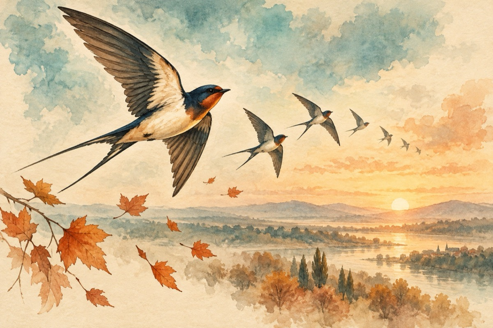

O rândunică
Ca în fiecare toamnă
Noi ne pregătim de drum
Revenim în primăvară
E un obicei străbun
Acum mă duc sus la sfat
De drum să ne pregătim
Toți puii i-am adunat
Mâine-n zori de zi pornim.
Nu-ți fă griji iubită toamnă,
Vom reveni negreșit
Și tu primăvară, vară,
Mulțumim pentru cum ne-ați găzduit
Flutură din aripioare
Cârduri, cârduri au plecat
Depărtarea veșnic doare
Drum bun, noi cu toții le-am urat!
Vasile Groza